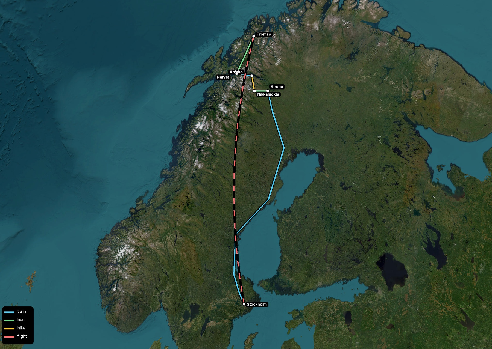
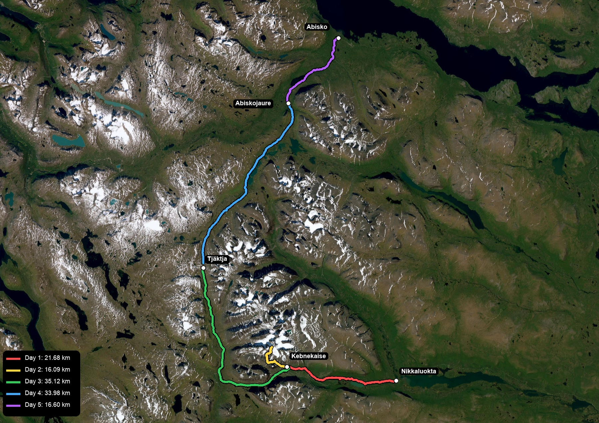
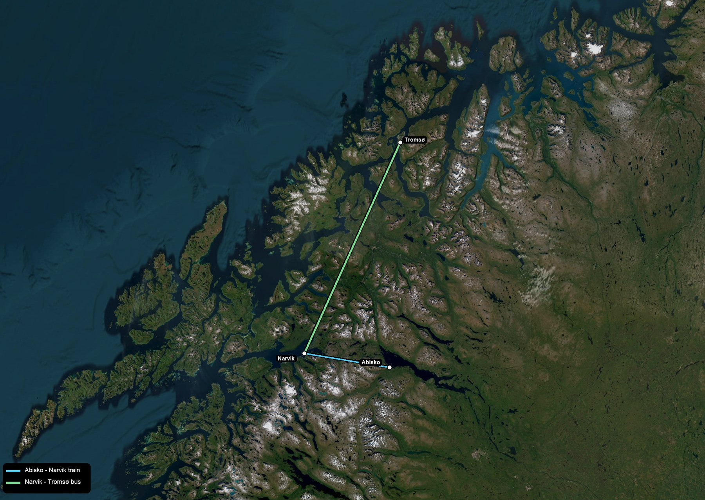
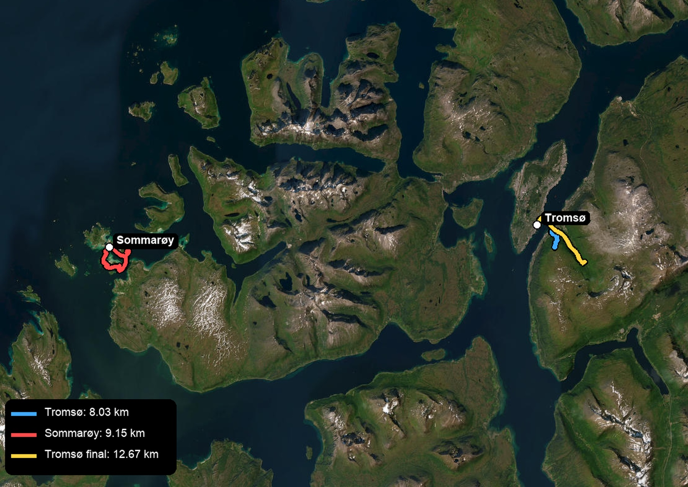

Kungsleden, a little too fast
In July 2025 we walked the northern Kungsleden corridor from Nikkaluokta, through Kebnekaise, and on toward Abisko. It was a beautiful route, but our schedule was tight enough that the main lesson was not about distance. It was about margin.

The first question was how to make the loop work: train north from Stockholm, bus to Nikkaluokta, walk to Abisko, continue through Narvik to Tromsø, then fly back south.

Our recorded Kungsleden and Kebnekaise activities came out to 123.47 km over five hiking days. That pace is possible, but I would not recommend copying it by default. Two of the days became more like execution than wandering.
| day | section | distance | gain | time |
|---|---|---|---|---|
| 1 | Nikkaluokta - Kebnekaise Fjällstation | 21.68 km | 478 m | 7.30 h |
| 2 | Kebnekaise area / summit day | 16.09 km | 1729 m | 12.56 h |
| 3 | Kebnekaise/Singi area toward Tjäktja | 35.12 km | 1339 m | 13.16 h |
| 4 | Tjäktja/Alesjaure/Abiskojaure section | 33.98 km | 383 m | 12.82 h |
| 5 | final approach to Abisko Turiststation | 16.60 km | 172 m | 4.81 h |


The better version would keep the same skeleton but let the trip breathe: a flexible day around Kebnekaise, then a slower movement north through Singi, Sälka, Tjäktja, Alesjaure, Abiskojaure, and Abisko. Kungsleden is better when it feels less like a plan being completed and more like a place being crossed.